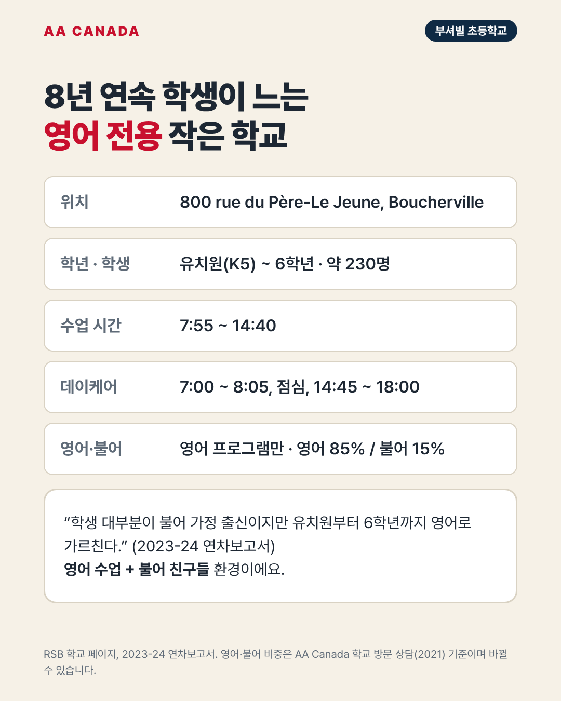

부셔빌 초등학교 (Boucherville Elementary School, BES)

기준일 2026-10-21 · AA Canada 정리
교육청 공통 정보는 리버사이드 교육청 공통 안내를 보세요.
한 줄 요약: 8년 연속 학생이 늘고 있는 부셔빌의 작은 영어 전용 초등학교. 친구 대부분이 불어 가정 출신이라 영어 수업 + 불어 생활 환경입니다.
한눈에 보기
| 항목 |
내용 |
| 주소 |
800 rue du Père-Le Jeune, Boucherville, QC J4B 3K1 |
| 학년 |
유치원(K5)~6학년 |
| 학생 수 |
약 230명 (2023-24, 8년 연속 증가) |
| 교장 |
Jenny Brousseau (2023-24 연차보고서) |
| 수업 시간 |
7:55~14:40 |
| 데이케어 |
7:00~8:05, 11:30~12:20, 14:45~18:00 |
| 프로그램 |
영어 프로그램만 |
| 학군 |
부셔빌, 칼릭사라발레, 바렌, 베르셰르 |
영어·불어 비중
- 영어 85% / 불어 15% (AA Canada 학교 방문 상담, 2021. 학교에 재확인 필요)
- 2023-24 연차보고서: "학생 대부분이 불어 가정 출신이지만 유치원부터 6학년까지 영어로 가르친다."
AA Canada 코멘트: 이런 가족에게 추천
- 작은 학교에서 세심한 관리를 원하는 조기유학생.
- 영어로 공부하면서 불어 친구들과 자연스럽게 어울리게 하고 싶은 가족.
- 부셔빌은 세인트로렌스 강변의 안전하고 조용한 교외 도시입니다.
출처
- RSB 학교 페이지: https://www.rsb.qc.ca/school/boucherville-elementary/
- 2023-24 연차보고서: https://www.rsb.qc.ca/wp-content/uploads/2025/01/BES-Annual-Report-23-24.pdf
- RSB 3개년 계획 2025-2028
- RSB Programs & School Zones 2026-27
- AA Canada 학교 방문 상담 자료(2021)